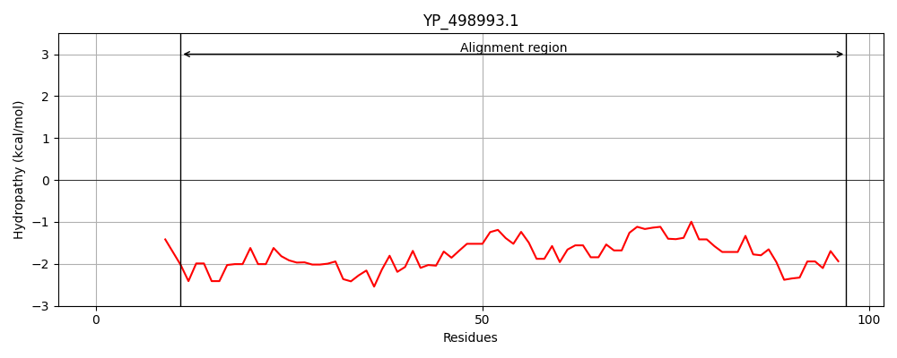
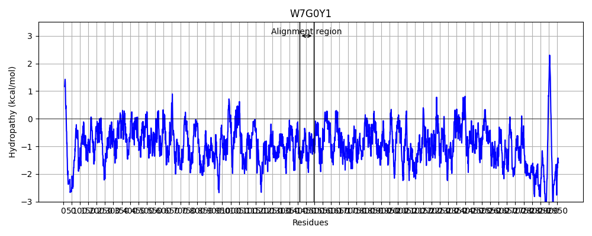
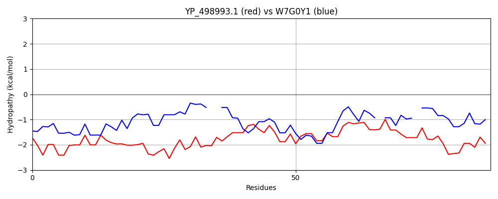

Hit Accession: W7G0Y1
Hit TCID: 1.C.105.2.10
Hit Description: gnl|BL_ORD_ID|20672 gnl|TC-DB|W7G0Y1|1.C.105.2.10 Reticulocyte-binding protein OS=Plasmodium falciparum Santa Lucia GN=PFAG_00579 PE=4 SV=1
Mach Len: 87
e:0.000216
Query TMS Count : 0
Hit TMS Count: 0
TMS-Overlap Score: 0.000000
Predicted Substrates:CHEBI:25367;molecule
BLAST Alignment:
| Protein Hydropathy Plots: | |
|---|---|
|  |  |
Pairwise Alignment-Hydropathy Plot: | |
|  | |